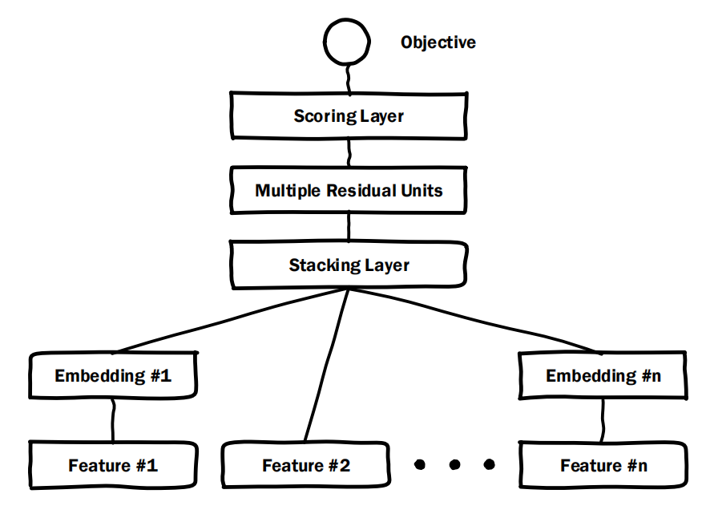
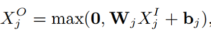
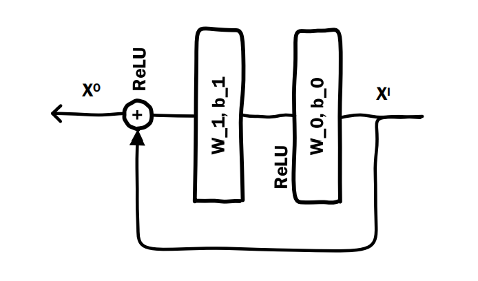
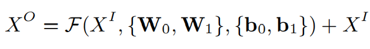

众所周知，好的特征对于模型是至关重要的。在深度学习大行其道之前，往往采用手工设计特征的方法，在原始特征的基础上，衍生出一些有效特征，来帮助模型更好的学习。
当深度学习时代来临后，以上过程可以交由神经网络实现了自动化，这一优势最先在语音、图形识别等领域大放异彩。
在推荐领域，Deep Crossing于2016年由于微软提出，它实现了特征组合的自动化。
Deep Crossing的模型结构如下：

从下往上看。
恰如其名，最下方的Feature#代表特征，比如Feature#1代表第一个特征，Feature#2代表第2个特征。
将特征再做细分的话，有类别特征和数值特征。对于类别特征，比如Feature#1，通常是原特征的One-Hot编码形式，若类别数较多，则做One-Hot编码后的特征将非常稀疏，鉴于此，在这些特征后面接Embedding层，从而将稀疏特征稠密化；对于数值特征，比如Feature#2，则无需做Embedding。
Embedding对应的前向传播过程如下：

本质上就是在全连接层后面使用ReLU进行激活。通过设置$W$的维度，可以使得$X^{O}$的维度小于$X^{I}$的维度，这就完成了稀疏类别特征的稠密化。
往上走，将Embedding后的类别特征同数值特征拼接在一起，就得到了一个长向量，这一操作由图中的Stacking Layer完成。
继续往上，将长向量输入到残差单元中，进行特征交叉。
残差单元是ResNet中的一个basic block，我们之前已经介绍过ResNet，不清楚的小伙伴可以看这篇文章：
Deep Crossing中的残差单元并不完全与ResNet中的相同，而是做了稍微的修改(不使用卷积)，其结构如下：

输入的长向量对应图中的$X^{I}$，它的前向传播过程如下：

继续向上走，Scoring Layer负责最后的输出。对于点击率预估问题，由于其本质就是个二分类问题，因此其对应的Scoring Layer可以使用Sigmoid函数。
此时，残差单元输出的$X^{O}$就是交叉后的特征向量，将其输入Scoring Layer，输出是否点击的概率。
以上便是Deep Crossing的整个前向传播过程。
对于二分类问题，作者在原论文中简单使用了交叉熵作为损失函数，当然，也可以自行替换成其它更有效的损失。
以上。
参考：
- [1] https://www.kdd.org/kdd2016/papers/files/adf0975-shanA.pdf
- [2] 王喆-《深度学习推荐系统》


- 本文链接：http://yoursite.com/2021/11/01/%E7%BB%8F%E5%85%B8%E6%8E%A8%E8%8D%90%E6%A8%A1%E5%9E%8B-DeepCrossing/
- 版权声明：本博客所有文章除特别声明外，均默认采用 许可协议。